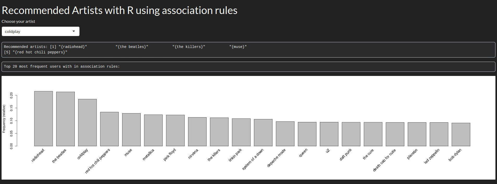

07-03-2023
Es increíble poder extraer conclusiones de cantidades ingentes de datos. Y es que debido a estas conclusiones, a día de hoy nuestra información vale millones.
En esta ocasión voy a trabajar con R para extraer reglas de asociación de un dataset con centenares de miles de transacciones. En este caso las transacciones son filas donde un usuario escucha a un artista determinado un número X de veces. Esta notación es usada en el market basket análisis básicamente un estudio de tendencias y preferencias de mercado que trata de vender productos en base de los que un comprador ha adquirido.
Como he comentado antes, vamos a extraer reglas de asociación usando el algoritmo Apriori; con estas reglas podremos crear un sistema de recomendación de música en base a nuestro dataset, extraído de la plataforma lastfm.
Empezamos importando las librerías con las que vamos a trabajar y el dataset:
library(readr)
library(dplyr)
library(ggplot2)
library(arules)
music_data <- as.data.frame(read_tsv("datasets/lastfm-dataset-360K/usersha1-artmbid-artname-plays.tsv"))Como pequeña anotación: una vez se lee el fichero este es un tibble (explicado en mi publicación de text-mining), ya que me dió problemas al trabajar con el paquete arules a la hora de crear las transacciones.
Cambio el nombre de las columnas para manejar mejor el conjunto de datos:
names(music_data) <- c("user","artist-id","artist","plays")
music_data <- group_by(music_data,user)
music_data <- mutate(music_data,
UserId = cur_group_id()
)
music_data <- ungroup(music_data,user)Además creo una nueva columna que sirve como id del usuario en vez de usar el sha1 del dataset.
Finalmente generamos las reglas de asociación con Apriori, para ello:
Nos quedamos con los datos de interés, para ello dividimos el dataset para quedarnos solo con el id del usuario y los artista que escucha.
Filtramos para obtener los valores únicos, evitando repeticiones.
Transformamos los datos al tipo “transactions”
Generamos las reglas con ciertos valores de confianza y soporte.
Nos quedamos con las mejores reglas en base al parámetro lift
music_by_user <- split(x=music_data[,"artist"],f=music_data$UserId)
music_by_user <- lapply(music_by_user, unique)
transaction_music_by_user <- as(music_by_user,"transactions")
rules <- apriori(transaction_music_by_user,list(support=.01, confidence=.5))
best_rules <- sort(subset(rules,subset=lift > 1),by="confidence")Una vez tenemos las reglas, solo nos queda filtrar la parte izquierda o lhs y encontrar las que tengan al artista en cuestión, devolviendo al usuario la parte derecha o rhs. Para ello despliego una plataforma web que he programado para que el usuario pueda seleccionar al artista, recibiendo las recomendaciones.

It is incredible to be able to draw conclusions from huge amounts of data. It is because of these conclusions, that today our information is worth millions.
This time I am going to work with R to extract association rules from a dataset with hundreds of thousands of transactions. In this case the transactions are rows where a user listens to a given artist X number of times. This notation is used in the market basket analysis - is basically a study of market trends and preferences that tries to sell products based on what a buyer has purchased.
As I mentioned before, we are going to extract association rules using the Apriori algorithm; with these rules we will be able to create a music recommendation system based on our dataset, extracted from the lastfm platform.
We start by importing the libraries we are going to work with and the dataset:
library(readr)
library(dplyr)
library(ggplot2)
library(arules)
music_data <- as.data.frame(read_tsv("datasets/lastfm-dataset-360K/usersha1-artmbid-artname-plays.tsv"))As a small note: once the file is read it is a tibble (explained in my text-mining post), as it gave me problems when working with the arules package when creating transactions.
I rename the columns to better manage the data set:
names(music_data) <- c("user","artist-id","artist","plays")
music_data <- group_by(music_data,user)
music_data <- mutate(music_data,
UserId = cur_group_id()
)
music_data <- ungroup(music_data,user)I also create a new column that serves as the user id instead of using the sha1 value of the dataset.
Finally we generate the association rules with Apriori, for this:
We keep the data of interest, so we split the dataset to keep only the id of the user and the artists he/she listens to.
We filter to obtain the unique values, avoiding repetitions.
We transform the data to the type “transactions”.
We generate the rules with certain values of confianza and support.
We keep the best rules based on the lift parameter.
music_by_user <- split(x=music_data[,"artist"],f=music_data$UserId)
music_by_user <- lapply(music_by_user, unique)
transaction_music_by_user <- as(music_by_user,"transactions")
rules <- apriori(transaction_music_by_user,list(support=.01, confidence=.5))
best_rules <- sort(subset(rules,subset=lift > 1),by="confidence")Once we have the rules, we only have to filter the left part or lhs and find the ones that have the artist in question, returning to the user the right part or rhs. To do this I deploy a web platform that I have programmed so that the user can select the artist, receiving the recommendations.